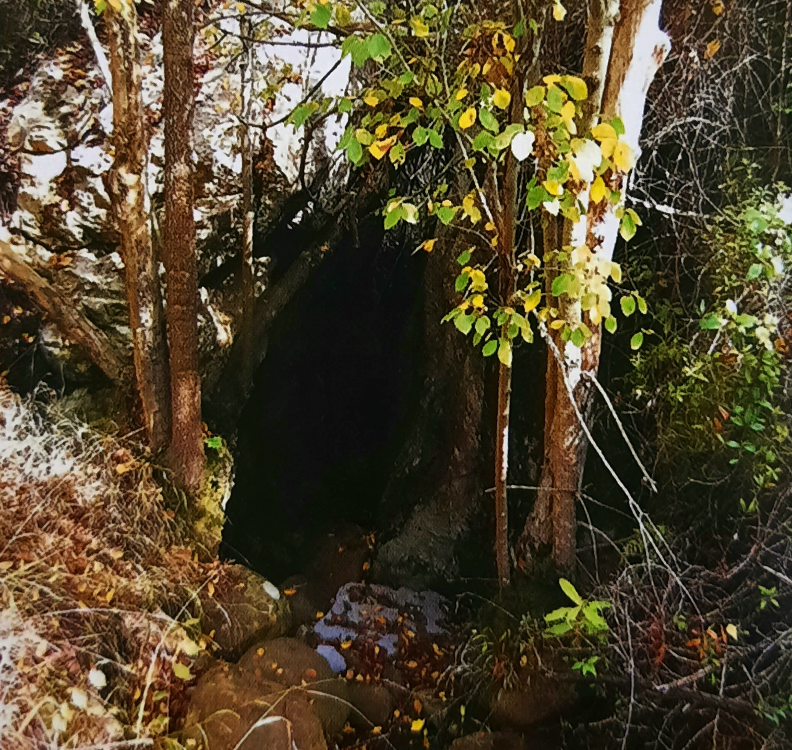

Abisso del Gatto

ITALIANO - Ipogeo carsico più profondo della Sicilia (oltre 320 metri), interessato da scorrimento idrico e con pochi fenomeni di stillicidio. Sono presenti pozzi alternati a gallerie con carattere meandriforme.
ENGLISH - Karst hypogeum, the deepest in Sicily (over 320 meters), affected by water flow and with few phenomena of dripping. There are wells alternating with tunnels with meandriform character.